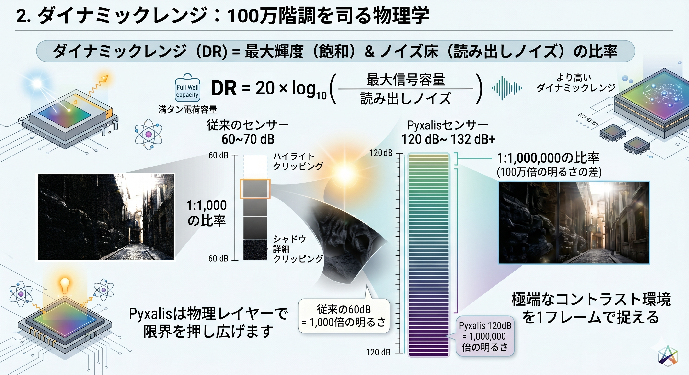
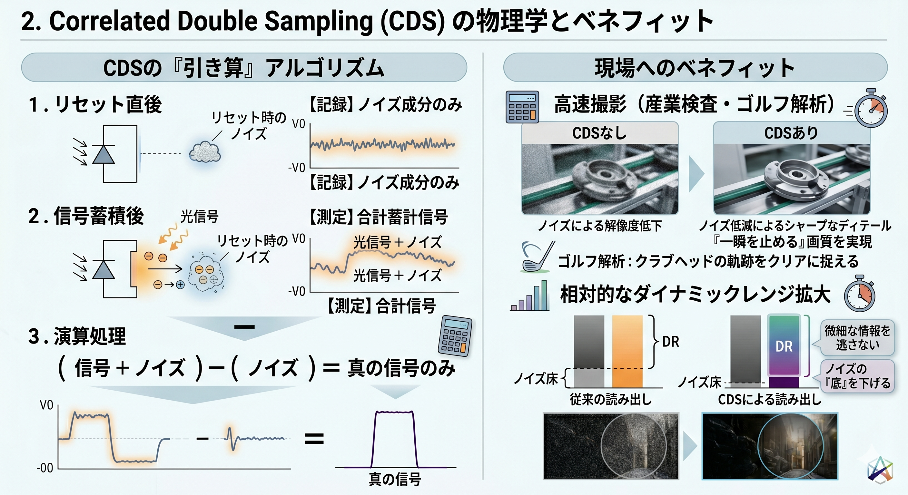
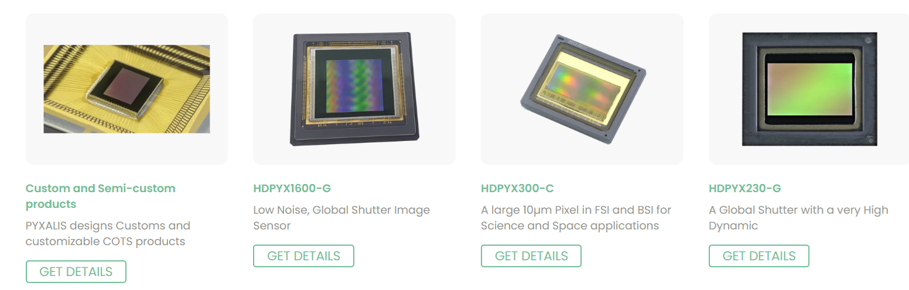

高度なCMOS画像センサソリューションで「不可視」を「可視」へ
フランスのモアランを拠点とするピクサリスは、CMOSイメージセンサ開発の精鋭チームが集結したファブレス・サプライヤです。航空宇宙、医療、ハイエンド産業機器など、標準的なセンサでは対応不可能な極限性能を求める顧客に対し、カスタムおよび標準ソリューションを提供しています。
ダイナミックレンジ（DR）は、センサーが捕捉可能な「最大輝度」と「ノイズ床」の比率です。Pyxalisはこの限界を物理レイヤーで押し広げています。
一般的なカメラが60〜70dBであるのに対し、Pyxalisのセンサーが実現する120dB〜132dBは、物理的に全く異なる次元の性能を意味します。
※ 120dBの実現は、明るさの比率で1:1,000,000（100万倍）の差を1フレームで捉える能力を指します。

白飛びを防ぐため、HDPYX 300では100ke⁻以上の高い飽和容量を確保。さらにデュアル・ゲイン（Dual CVF）により、高輝度時には感度を適正化し情報を残します。
読出しノイズを2e⁻ rms以下に抑え込むことで、1mlux（肉眼ではほぼ漆黒）の環境下でも被写体を明瞭に可視化します。
「極低ノイズ」という仕様の裏側には、CDS（Correlated Double Sampling）という緻密なプロセスが存在します。これはセンサーが「光の粒を正確に数える」ための必須の浄化工程です。

高速撮影（産業検査・ゴルフ解析）: 露光時間が極端に短いシーンでも、CDSによる浄化でノイズを抑え「一瞬を止める」画質を実現します。また、ノイズの「底」を下げることで、相対的にダイナミックレンジが拡大し、微細な情報を逃しません。
Pyxalisは、さまざまな産業ニーズに対応する高性能センサーを幅広く展開しています。

| センサー名 | 画素数 | 特徴 | 主な用途 |
|---|---|---|---|
| HDPYX 130 | 1.3MP | 132dB HDR, 1mlux照度 | 車載・監視カメラ |
| HDPYX 230-G | 2.3MP | Global Shutter, 160fps | 産業用、ITS |
| GIGAPYX 4600 | 46MP | 35mmフルサイズ, BSI | 高速シネマ撮影 |